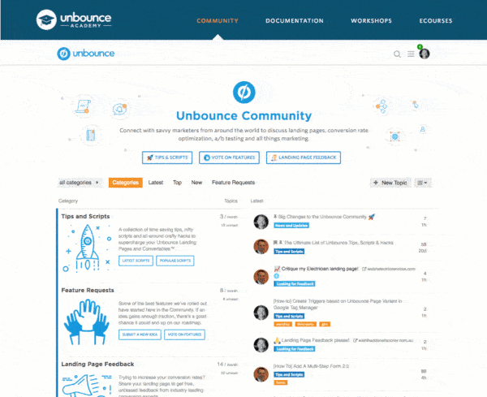
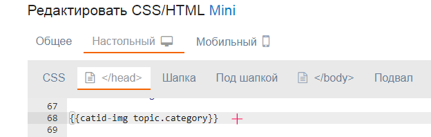
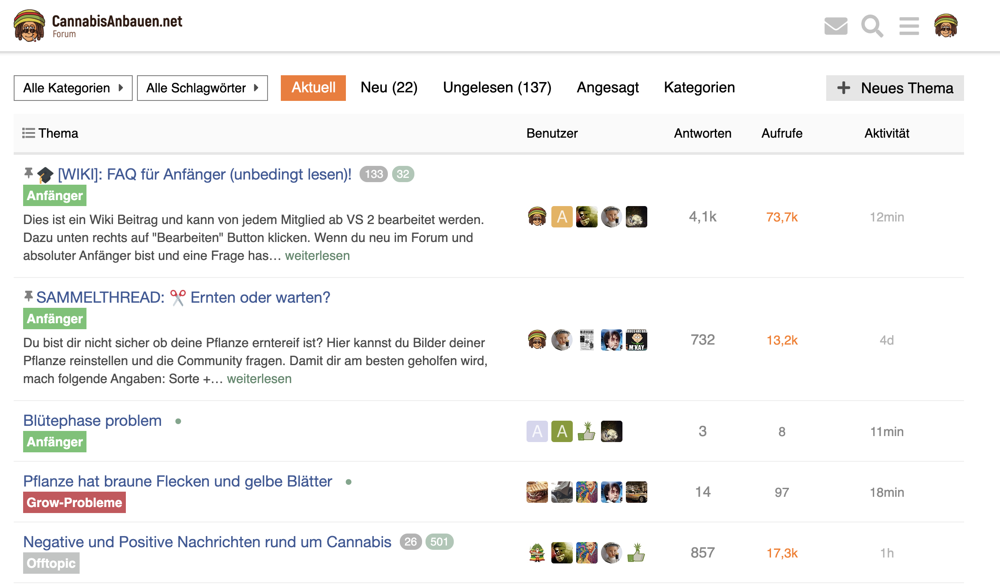

Hi!
Something very weird happened to my minimal theme 
Do you have any idea how to fix it?
Cheers!
Sam's Simple Theme
{kind=link}
Probably, need a website to see where css. As a rule, it is sufficient to add a fixed column width or set the width in percent.
Yeah this is a bug in the theme, pr-welcome to fix it.
I’m more backend-Linux-bash-script person than CSS guru  But thanks for hint, I’ll try to figure it out.
But thanks for hint, I’ll try to figure it out.
I fully agree with this @codinghorror. For me, seeing that a large number of people are chiming in makes me get major FOMO. What are they talking about? What am I missing?
In fact, we just switched our homepage to the Category / Latest Topics view, but the thing that I’m really missing from the Latest view is how activity is displayed in the form of avatars.
{kind=link}
I tried to make a mock-up of my dream layout, but I’m not sure if I’m communicating the idea well enough. We might end up hiring a dev to help us make this change, but I’d love to hear from others on what they think.

This totally depends on your community. For us the avatars on the index page are just clown vomit.
The reason is that 99% of the topics on our would have the maximum number of avatars shown. This produces a wide and colorful column to the middle of the screen, which has too much weight against a natural white background, and adds very little information as all topics are popular - everybody jumps to every topic. Very different to the user behavior that we see for example here.
One way to look at it is the topics/posts ratio. Here at Meta there are 160 new topics and 2.8k posts for the last 7 days. On our community there are only 22 topics but 4.1k posts for the same period.
The avatars do work on small and growing communities, as it makes the front page look busy / active.
Do not know where to add, I want to share. In this example, you can see how to change the individual elements in the design. I do not know how true this approach is.
Add:
PLAGIN/assets/javascripts/discourse/helpers/catid-img.js.es6
import { registerUnbound } from 'discourse-common/lib/helpers';
var get = Em.get,
escapeExpression = Handlebars.Utils.escapeExpression;
export function categoryBadgeHTML(category, opts) {
opts = opts || {};
let categoryID = escapeExpression(get(category, 'id'));
let img = Discourse.Category.findById(categoryID).uploaded_logo.url;
let categoryName = escapeExpression(get(category, 'name'));
let url = opts.url ? opts.url : Discourse.getURL("/c/") + Discourse.Category.slugFor(category);
return `<a class="catid-url" title="${categoryName}" href="${url}"><img src="${img}" alt="${categoryName}" class="catid-logo"></a>`;
}
export function categoryLinkHTML(category, options) {
var categoryOptions = {};
return new Handlebars.SafeString(categoryBadgeHTML(category, categoryOptions));
}
registerUnbound('catid-img', categoryLinkHTML);
Add:

{{catid-img topic.category}}
The output of category icons:
{kind=link}
P.S. perhaps this can be done in another way, more easier, but it is easier for me to add 1 file to the plugin.
How can we contribute translations to the theme?
How to fix this, i already disable the Topic List Preview plugin but still same as picture below
{kind=link}
Replies Last Post are on wrong section, and view count still visible
Do you use the Topic List Previews plugin on your install?
In fact I do
Just disabled it in the settings, but that didn’t help.
The template from the plugin is loaded even if the plugin is disabled in the settings. So, you don’t get the template modifications that this component adds, but you get the CSS, which is why you end up with the broken layout.
So there is no workaround to use Topic List Previews plugin with Sam’s Theme?
I can’t for the life of me figure out how to install this as the default for my community. Seems like it would be in the admin panel, under “customize” and “Themes”, but can’t find it. Anyone have any tips?
{kind=link}
The buttons are over here
{kind=link}
Thanks for the help. When I add a new one, I’m not seeing Sam’s theme anywhere
{kind=link}
Am I supposed to be importing here? If so, how can I find the url to the repository for sam’s theme?
{kind=link}
Yes, you need to import it. The URL is in the original post at the top of this topic.
Is this the url to add? GitHub - discourse/discourse-simple-theme: Sam's simple discourse theme
Yep, that’s the one (you could just try it and find out, nothing bad happens if you use the wrong URL you just get an error).
Hello @sam, is it ok if I use parts of your theme to do a theme component ?
I played with this this weekend and I think I can do a theme component for those interested
Sure the license allows it  discourse-simple-theme/LICENSE.txt at main · discourse/discourse-simple-theme · GitHub
discourse-simple-theme/LICENSE.txt at main · discourse/discourse-simple-theme · GitHub
What are you looking to change?
I wanted to create a theme component who can work on a majority of themes, because I didn’t really know how to edit the topic-list-item.raw.hbs, I used your work as a base.
I used two parts of your theme, the last post column and the author of the topic under the title, and I put back the views column and compatibility with featured link. I played with a few things here and there. I’ll present my theme component very soon.
To be sure, I wanted to ask for your permission, but I should have read the license 
Thanks
Hi @sam
I´m starting to using your theme in my new forum. I have a problem in desktop version (not happens in mobile version).
When I activate the feature “topic featured link enabled” the source url is not showing in the topic title. It´s strange, in mobile is showing perfectly, like in the default Discourse theme.
Any idea what can I do to fix it?
Default theme, you can see elperiodico.com and xataka.com as sources:
{kind=link}
Sam´s Simple theme, the links to the original sources are gone:
{kind=link}
Thanks in advance
You can edit the theme in the Header section
And replace it all with this:
<script type='text/x-handlebars' data-template-name='list/topic-list-item.raw'>
{{#if bulkSelectEnabled}}
<td class='star'>
<input type='checkbox' class='bulk-select'>
</td>
{{/if}}
<td class='main-link clearfix'>
{{raw "topic-status" topic=topic}}
{{topic-link topic}}
{{~#if topic.featured_link}}
{{~topic-featured-link topic}}
{{~/if}}
{{#if controller.showTopicPostBadges}}
{{raw "topic-post-badges" unread=topic.unread newPosts=topic.displayNewPosts unseen=topic.unseen url=topic.lastUnreadUrl}}
{{/if}}
{{discourse-tags topic mode="list"}}
{{raw "list/topic-excerpt" topic=model}}
<div class='creator'>
{{#if showCategory}}
{{category-link topic.category}}
{{/if}}
{{~#if topic.creator ~}}
<a href="/users/{{topic.creator.username}}" data-auto-route="true" data-user-card="{{topic.creator.username}}">{{topic.creator.username}}</a> <a href={{topic.url}}>{{format-date topic.createdAt format="tiny"}}</a>
{{~/if ~}}
{{raw "list/action-list" topic=topic postNumbers=topic.liked_post_numbers className="likes" icon="heart"}}
</div>
</td>
{{#if controller.showLikes}}
<td class="num likes">
{{number topic.like_count}} <i class='fa fa-heart'></i>
</td>
{{/if}}
{{#if controller.showOpLikes}}
<td class="num likes">
{{number topic.op_like_count}} <i class='fa fa-heart'></i>
</td>
{{/if}}
{{raw "list/posts-count-column" topic=topic}}
<td class="last-post">
<div class='poster-avatar'>
<a href="{{topic.lastPostUr}}" data-user-card="{{topic.last_poster_username}}">{{avatar topic.lastPoster usernamePath="username" imageSize="medium"}}</a>
</div>
<div class='poster-info'>
<a href="{{topic.lastPostUrl}}">
{{format-date topic.bumpedAt format="tiny"}}
</a>
<span class='editor'><a href="/users/{{topic.last_poster_username}}" data-auto-route="true" data-user-card="{{topic.last_poster_username}}">{{topic.last_poster_username}}</a></span>
</div>
</td>
</script>
<script type='text/x-handlebars' data-template-name='topic-list-header.raw'>
{{#if bulkSelectEnabled}}
<th class='star'>
{{#if canBulkSelect}}
<button class='btn bulk-select' title='{{i18n "topics.bulk.toggle"}}'><i class='fa fa-list'></i></button>
{{/if}}
</th>
{{/if}}
{{raw "topic-list-header-column" order='default' name='topic.title' bulkSelectEnabled=bulkSelectEnabled showBulkToggle=toggleInTitle canBulkSelect=canBulkSelect}}
{{#if showLikes}}
{{raw "topic-list-header-column" sortable='true' order='likes' number='true' forceName='Likes'}}
{{/if}}
{{#if showOpLikes}}
{{raw "topic-list-header-column" sortable='true' order='op_likes' number='true' forceName='Likes'}}
{{/if}}
{{raw "topic-list-header-column" sortable='true' number='true' order='posts' forceName='Replies'}}
{{raw "topic-list-header-column" sortable='true' order='activity' forceName='Last Post'}}
</script>
<script>
(function(){
var TopicListItemView = require('discourse/components/topic-list-item').default;
TopicListItemView.reopen({
showCategory: function(){
return !this.get('controller.hideCategory') &&
this.get('topic.creator') &&
this.get('topic.category.name') !== 'uncategorized';
}.property()
});
})();
</script>
Haven’t tried it, but it should work
Thanks @Steven, I´ll try it!
Awesome thanks for specifying this!
It´s working nice, thanks @Steven
Hey @sam
I have been trying to get the theme running on my forum
but it doesn’t work, the columns in home page are still same and not like in theme. 
how can I debug it and see what prevents it from working?
It is definitely working here. I recommend you upgrade to the latest version of Discourse and install using the official guide.
The topic list preview plugin caused some issue. After uninstalling it, it works. Even disabling it didn’t help.
@sam how can I translate the theme’s parts? I didn’t find the entries in site_texts
Oh, not yet, I need to restructure a bit for that
the topic list in the Spotify community, is very similar to the Sam’s personal minimal topic list, and even much more minimal. The comment icon next to the number of replies makes it more consistent, as well.
{kind=link}
added it here for inspiration.
Bit different approach. I had few hours last night and jumped into Discourse theming. This is just a simple design.
I might continue and fix few things…I see today there are too many colors…like like hipster style, but in general would like to have a forum design that fits small/startup businesses so less forumish looking 
{kind=link}
That amazing? Any plans to make it public? 
To be honest I doubt that this will ever come to life. I am full time UX designer now so I have no time for developing anymore. However, I do have tendency to design forums when I have free time 
@sam any chance the replies column will make a comeback? at least as a theme option. 
@webinsane, i understand you don’t want to commit to further development, but can what you’ve done so far be shared? It really looks clean/awesome!
I am afraid part of this being “personal” is that it is my prefs… so I think best you can do here is just fork it and make your own theme. I don’t mean to be mean hear, but I want to avoid options on my personal theme.
If I do such a modification, will be be overwritten by future updates?
@sam Is it intended that for topics made from URLs the external link is hidden in topic list view? In my case they are not displayed on home page for this topic:
@Joshua_Kogan Sorry for the late reply. I think there was a misunderstanding as this is just a draft design. No actual code behind it. If there is interest I can continue designing and open source the Figma file to a possible developer(s).
That said there is lots of work left:
- Style guides
- Components
- Topic view
- Profile pages
- Category view
- and more
Even thou it looks minimal Discourse is a complex beast 
Sorry @sam I should have opened my own personal minimal theme topic 
Thanks for the great theme 
Is there any way to add ability to translate “Replies”/“Last Post”? For now I just changed it in the code, but as I understand it’s not recommended because the changes will be lost if the theme updates.
@sam really like this theme, but wondering if there’s something I can change on my end to make it work well with the dark colour palette?
Yeah, I am also interested in this, just asked a similar question here:
There is now, I just made it localizable and pushed a fix.
I have a similar issue where by default the theme looks like this in Dark Mode (via this switcher):
{kind=link}
the avatar of the last user replied, is not shown in this theme anymore:
{kind=link}
I wonder if it’s by intention or it’s a simple bug. either case, in my opinion, the theme was more beautiful with the avatars.
It’s a little bug, it will be fixed soon.
If you want to fix it until then, you just need to edit the theme and in the Desktop > Header part, change the code with this
((edited, upgrade the component now))
You’ll still be able to upgrade the theme after this change
Thanks bookmarked and set a reminder for Monday
EDIT: fix is merged thanks @Steven!